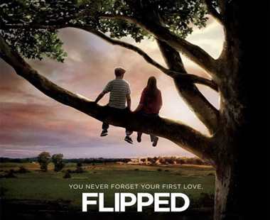

|  |
>怦然心动<布莱斯(卡兰·麦克奥利菲)全家搬到小镇，邻家女孩朱莉(玛德琳·卡罗尔 )前来帮忙。她对他一见钟情。两人是同班同学，朱莉一直想方设法接近布莱斯，但是他避之不及。两人之间发生了一些误会，朱莉对布莱斯的感情开始动摇，但此时布莱斯却开始不自觉地关注起了朱莉，在意识到自己对朱莉的感情后，他认真乞求朱莉的原谅，两人重归于好，敞开心扉。 |
>遇见你之前<露易莎(艾米莉亚·克拉克 )是一个年轻的小镇姑娘,威尔(山姆·克拉弗林)则过着十分优渥的生活。直到一场事故之后，脖子以下高位截瘫，小露后来成为了他的护工。威尔最初的时候很痛苦，也很刻薄。而小露带着他去马赛，跟他一起看音乐会，深夜忏悔时蜷在他身旁，改变了威尔的生活和内心。两个人产生了爱情，但最后威尔不堪身体的痛苦，在与露易莎好好告别之后，选择了安乐死。 |
 |